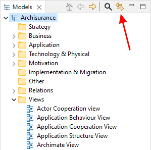
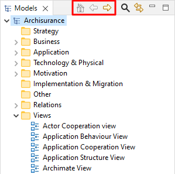
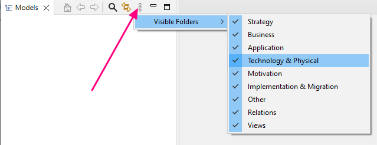

通常，您可以在模型树中添加、删除、复制、移动和重命名概念和视图。您还可以在主文件夹分组下创建文件夹，以便将概念组合在一起。
对象通过文件夹中的拖放进行管理。请注意，您不能将概念从一种主文件夹类型移动到另一种。例如，业务概念只能在“业务”文件夹或其子文件夹之一中，关系只能在“Relations”文件夹或其子文件夹之一中。
除了拖放之外，您还可以在文件夹之间剪切和粘贴对象。在树中选择对象后选择“剪切”，选择目标文件夹后，选择“粘贴”以移动对象。
要删除模型树中的一个或多个对象，请选择它们并从主“编辑”菜单或主工具栏中选择“删除”。
请注意，如果您希望删除的概念出现在一个或多个视图中，则会警告您在这些视图中引用了该概念。 如果您随后从树中删除该概念，您也会将其从引用它的任何视图中删除。

关于删除概念的警告
要重命名模型树中的对象，请从主编辑菜单或右键单击上下文菜单中选择“重命名”。您也可以在属性窗口中重命名它。
要复制模型树中的元素或视图，请从主“编辑”菜单或右键单击上下文菜单中选择“复制”。请注意，重复视图包含对复制的原始概念的引用。
可以在模型树中更改元素或关系的ArchiMate概念类型。要在模型树中更改一个或多个对象的ArchiMate概念类型,请选择所需的元素或关系,然后从右键上下文菜单中选择“设置概念类型”子菜单,然后选择所需的ArchiMate概念。
更改关系类型时,上下文菜单中只启用与其源概念和目标概念有效的ArchiMate关系。
更改元素类型时,任何不再有效的连接关系都将更改为关联关系。在这种情况下,将显示确认对话框。可以在首选项中启用在更改的关系的文档字段中添加注释的选项。
更改元素类型时,如果将其更改为属于不同ArchiMate层的概念,它将被移动到相应的文件夹中。例如,将业务服务更改为应用服务会将其从“业务”文件夹移动到“应用程序”文件夹。
请注意,更改概念类型不会保留任何分配的特殊性,因为这将使其无效。
要在模型树中编辑选定对象的属性，请在树中选择对象并通过双击对象或从主“窗口”菜单或主工具栏打开属性窗口。
模型树中的每个对象都有不同的属性，可以在属性窗口中设置或查看。有关详细信息，请参阅属性窗口部分。
注意 - 只有在视图中选择对象时才能编辑某些属性（例如，填充颜色、字体或线宽）。
模型树中的概念可以添加到模型中任意数量的图表视图中，方法是将它们拖到视图的画布上（参见“视图”部分）。当在视图中添加或使用概念时，模型树中用于该概念的字体是正常的。但是，如果该概念仅存在于模型树中且未在任何视图中使用，则它会以 斜体 字体显示：

斜体显示视图中未使用的概念
这样可以方便地查看那些可能已经变得多余并且可以删除的概念。
在模型树和图表视图中选择概念时，同步两个窗口中的概念之间的选择有时很有用。在“模型树”窗口中按下“链接到视图”按钮可以启用或禁用在模型树和图表之间同步选定的概念：
“链接到视图”按钮
此按钮是一个开关，可以关闭或打开。
可以对多个选定概念进行同步选择。
请注意，只有在相关视图打开时才能进行同步选择。如果视图不包含特定概念或概念，则在模型树中选择一个概念将不会同步视图中的选择。
使用向下钻取按钮“主页”、“返回”和“进入”，可以“钻取”模型或文件夹。当前选定对象或文件夹的路径显示在状态栏中。
“向下钻取”按钮
可以隐藏模型树中的顶级文件夹。一个常见的用例是“关系”文件夹的内容可能会变得很长和难以管理。要隐藏文件夹,请单击模型树工具栏中的下拉菜单,然后在“可见文件夹”子菜单中选中或取消选中您要隐藏或显示的文件夹。
显示或隐藏顶级文件夹